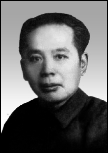

名人笔下的重庆（三）：张恨水说重庆短文四则

张恨水
张恨水（1895—1967），原名张心远，笔名恨水，江西广信人。著名作家。1938年1月，张恨水来到重庆，任《新民报》主笔兼副刊主编，被推选为中华全国文艺界抗敌协会理事。在重庆的8年中，他结识了许多进步文化人士，多次受到中共中央南方局和八路军驻渝办事处领导同志的关怀和鼓励，激发了他的爱国心、正义感和创作热情。在此期间，他创作了《八十一梦》《水浒新传》《魍魉世界》等抗日救亡小说和散文、诗歌以及大量讽喻时弊的杂文。张恨水“国如用我何妨死”的大无畏气概与“未用人间造孽钱”的高风亮节，受到毛泽东、周恩来的肯定。
张恨水于1945年12月离开重庆，在重庆的8年间，他居住在市郊南温泉桃子沟。这备尝艰辛的旅渝生涯，使他对自己寄身托命的山城有了深切的认知，写了许多为山城歌、为山城哭的文字。本期为大家带来张恨水描写重庆的短文四则，这其中有描写重庆自然、地理特色的《雾之美》《重庆的房子》；也有他在抗战胜利东归后，远望巴山，深切怀念重庆的散文《五五早起书怀》《去年今日别巴山》，请大家欣赏。
居重庆六年，饱尝雾之气氛，雾可厌，亦可喜，雾不美，亦极美，盖视季节环境而异其趣也。大抵雾季将来与将去时，含水分极多，重而下沉，其色白。雾季正盛时，含水分少，轻而上浮，其色青。青雾终朝弥漫半空，不见天日，山川城郭，皆在愁惨景象中，似阴非阴，欲雨不雨，实至闷人。若为白雾，则如秋云，如烟雨，下笼大地，万象尽失。杜甫诗谓“春水船如天上坐”，若浓雾中，己身以外，皆为云气，则真天上居也。
白雾之来也以晨，披衣启户，门前之青山忽失。十步之外，丛林小树，于薄雾中微露其梢。恍兮惚兮，得疏影横斜之致。更远则山家草屋，隐约露其一角。平时，此家养猪坑粪，污秽不堪，而破壁颓篱，亦至难寓目。此时一齐为雾所饰，惟模糊茅顶，有如投影画。屋后为人行路，遥闻赶早市人语声，在白云深处，直至溪岸前坡，始见三五人影，摇摇烟气中来，旋又人烟气中而消失，微闻村犬汪汪然，在下风吠客，亦不辨其出自何家也。 一二时后，雾渐薄，谷中树木人家，由近而远，次第呈露。仰视山日隔雾层而发光，团团如鸡子黄，亦至有趣。又数十分钟，远山显出，则天色更觉蔚蓝，日光更觉清朗，黄叶山村，倍有情致矣。
重庆的房子包括川东沿江的码头，那是世界上最奇怪的建筑。那种怪法，怪得川外人有些不相信。比如你由大街上去拜访朋友，你一脚跨进他的大门，那可能不是他家最低的一层，而是他的屋顶。你就由这屋顶的平台上，逐步下楼，走进他的家，所以住在地面的人家，他要出门，有时是要爬三四层楼，而大门外恰是一条大路，和他四层楼上的大门平行。这是什么原故?因为扬子江上溯入峡，两面全是山，而且是石头山。江边的城市，无法将遍地的山头扒平。城郭街道房屋，都随了地势高低上下建筑。街道在山上一层层地向上横列地堆叠着，街两旁的人家，就有一列背对山峰，也有一列背对了悬崖。背对山峰的，他的楼房，靠着山向上起，碰巧遇到山上的第二条路，他的后门，就由最高的楼栏外，通到山上。这样的房子还不算希奇。因为你不由他的后门进去，并不和川外的房屋有别的。背对了悬崖的房屋，这就凭着川人的巧思了。悬崖不会是笔陡的，总也有斜坡。川人将这斜坡，用西北的梯田制，一层层的铲平若干尺，成了斜倒向上堆叠的大坡子。这大坡子小坦地，不一定顺序向上，尽可大间小，三间五，这样的层次排列。于是在这些小坦地上，立着砖砌的柱子，在上面铺好第一层楼板。那末，这层楼板，必须和第二层坦地相接相平。第二层楼面就宽多了。于是在这一半楼面一半平地的所在，再立上柱子，接着盖第三层楼。直到最后那层楼和马路一般齐，这才算是正式房子的平地。在这里起，又必须再有两三层楼面，才和街道上的房子相称。所以重庆的房子，有五六层楼，那是极普通的事。可是这五六层楼，若和上海的房子相比，那又是个笑话。他们这楼房，最坚固的建筑，也只有砖砌的四方柱子。所有的墙壁，全是用木条子，双夹的漏缝钉着，外面糊上一层黄泥，再抹石灰。看去是极厚的墙，而一拳打一个窟窿。第二等的房子，不用砖柱，就用木柱。也不用假墙，将竹片编着篱笆，两面糊着泥灰，名字叫着夹壁。还有第三等的房子，那尤其是下江人闻所未闻。哪怕是两三层楼，全屋不用一根铁钉。甚至不用一根木柱。除了屋顶是几片薄瓦，全部器材是竹子与木板。大竹子作柱，小竹子作桁条，篱片代替了大小钉子，将屋架子捆住。壁也是竹片夹的，只糊一层薄黄泥而已。这有个名堂，叫捆绑房子。由悬崖下向上支起的屋子，屋上层才高出街面的，这叫吊楼，而捆绑房子，就照样的可以起吊楼。惟其如此，所以重庆的房子，普通市民，是没有建筑上的享受的。
七年前的五四，我一家，几乎没炸死烧死。五五天不亮，我护送着妻儿离开重庆市区。我知道渡江不易，由七星岗倒走向两路口，取道浮图关下的山路走向菜园坝。大街上，店户闭着门，穷苦百姓，挑着行李，提着包袱，全不作声，人像水一样，向市区外流。一路脚步擦着路面声。看任何人的脸子，全是忧愁所笼罩。我惊于空袭对心理上作用之大，我知道国家抗战之苦，我更知道，这不过是一小点的空袭，若一个国家，整个被打垮了，而兵临城下，那又是什么景象。
我们在山上一看江滩上待渡的人，说什么万头攒动，像一块乌云，像一片蚂蚁。这如何能过江？万一敌机这时到了，那事真不能想像。因之我越发倒走，尽量离开市区。在坟堆的槐树林下，遇到一位挑江水的。我们花两毛钱（至少值现时一千元）要了一瓢冷水，站着互递了洗脸漱口。所有洗脸用具，是妻一条手绢，完全代表。各喝一口冷水，逆流而行，离开码头四五里，在木筏外面，有一批小船。我看四周还无抢渡的群众，我以川语高呼“我们是跳(读如条)警报的，哪个渡我们过河，我出五元钱。”这是个可惊的数目，当日可以买到五斗米，一个渔夫，懒洋洋的船篷下伸头望了我们一下。他带了笑说：“再多出两元，要不要得？”我没有考虑。立刻说声：“就是吗！”踏过六七十公尺的一片木筏，我们上了船。二十分钟后，我们到了南岸的沙滩上。跑了一夜警报的她，始终面如死灰，这时微微对我一笑，问：“脱离危险区了吗？”我竟是把妻当了朋友，热烈地握着她的手说：“我们相庆更生了。”抬头一看，一片蔚蓝色的天，悬着一轮火样的烈日。重庆在隔江山上，簇拥着千家楼阁像死去了的东西，往下沉，往下沉。天空里兀自冒着几丛烧余不尽的黑烟。对岸几片江滩，人把地全盖住了。呼唤和悲泣声，隐隐可闻。江流浩浩，无声的流去，水上已没有渡轮，偶然有一只小船过江，上面便是人堆。人堆在黄色的水面上悄悄的移。
这日子，妻正向我学诗，不知她套着那书上的成句，告诉我说：“愿我有生年，不忘今日惨。”她眼圈儿一红。看了孩子，牵着我的衣服。
我恨了日本人七年，直到广岛吃原子弹，而松了这口气。七年后的五五，我和妻，相隔三四千里，纪念着这个惨痛的日子。早起，我孤独地站在院子里，有点惘然。……
老槐树上，一架航机，轰然飞过。怕听的马达声，我已不怕了，算是我获得的胜利。我惘然什么?
去年今日（十二月二日），我开始离开七年倚居的重庆。当日冒着风雨渡江，夜宿南岸海棠溪。“海棠溪”这个名词，多么富有诗意呀！况是风雨海棠溪呢？其实那里是毫无足取的，只是重庆对江，一个公路站起点。西边一片黄草童山，护着一条水泥面路，直到江滩。东边是群乱七八糟的民房，夹着一条小街。车站旁边，两面童山，带着一片坟堆，和一些歪倒的民房，夹了一条秽水沟，在很深的土谷里，流向长江，实在找不到一点诗意。
不过这天我带家小到了海棠溪，却是悲喜交集，说不出来是一种什么滋味。我家住南温泉六年多，城乡来去，必须在海棠溪上下公共汽车，车站员工，几乎无入不熟。这次上车，变了长途，直赴贵阳。我从此离开四川，也就离开六年来去的海棠溪。久客之地，成了第二故乡，说到离开，倒有些舍不得似的。
这晚，正值斜风细雨。我走出旅馆，站在江边码头上。风吹着我的衣襟和头发，增加一种凄凉意味，满眼烟雾凄迷，看不到什么。深陷在两岸下的扬子江空荡荡的一片黑影。隔岸重庆，一家屋影不见，只是烟雨中万点灯火像堆大灯塔，向半空里层层堆起。我暗喊着梦里的重庆，从此别了。这烟雨灯火中，多少我的朋友啊。当时得诗一律：
壮年入蜀老来归，老得生归哭笑齐。
八口生涯愁里过，七年国事雾中迷。
虽逢今夜巴山雨，不怕明春杜宇啼。
隔水战都浑似梦，五更起别海棠溪。